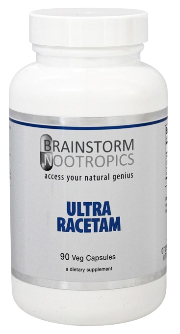
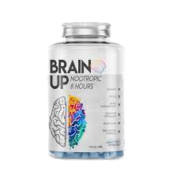
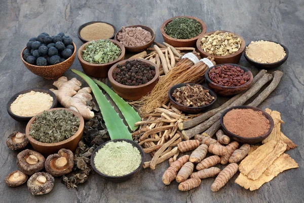

Nootrópicos naturais
Nesta página, exploraremos os usos terapêuticos de nootrópicos para melhorar condições específicas de saúde mental e cognitiva.
Tipos de nootrópicos náturais
FRONT SIDE
BACK SIDE
Your back side text here
FRONT SIDE
BACK SIDE
Your back side text here
FRONT SIDE
BACK SIDE
Your back side text here
FRONT SIDE
BACK SIDE
Your back side text here
Benefícios dos Nootrópicos Naturais
Os nootrópicos naturais são substâncias derivadas de plantas e ervas que podem aprimorar a função cognitiva. Eles oferecem benefícios como melhora da memória, foco e concentração, além de promover a neuroplasticidade e reduzir o estresse. Embora mais suaves que as drogas farmacêuticas, os resultados variam, exigindo consistência. Consultar um profissional de saúde antes de usar é recomendado. Em resumo, os nootrópicos naturais são uma alternativa para melhorar a saúde mental e cognitiva de maneira equilibrada.

Nootrópicos Naturais vs Sintéticos
Nootrópicos naturais são extratos de fontes naturais, como plantas e ervas, enquanto os sintéticos são criados em laboratório. Os naturais são geralmente mais seguros, mas sua eficácia pode variar. Os sintéticos oferecem resultados direcionados, porém podem acarretar mais efeitos colaterais. Os naturais têm benefícios holísticos, enquanto os sintéticos são específicos. A escolha depende das necessidades individuais e da preocupação com a segurança. Pesquisa, consulta profissional e moderação são essenciais, e uma abordagem combinada pode equilibrar melhorias cognitivas com saúde a longo prazo.

Uso Tradicional de Ervas Nootrópicas
O uso de ervas nootrópicas é uma prática histórica, abraçada por várias culturas ao redor do mundo. Essas substâncias naturais, conhecidas por melhorar a função cerebral, foram tradicionalmente empregadas para aumentar a memória, foco e clareza mental. Culturas antigas, como a chinesa e a indígena, usavam plantas como Ginkgo biloba e Bacopa monnieri para aprimorar a cognição. Ao reconhecer a ligação entre corpo, mente e natureza, essas tradições buscavam um equilíbrio holístico. No entanto, a aplicação atual dessas práticas deve ser informada por ciência moderna, respeitando a riqueza do conhecimento ancestral enquanto considera a pesquisa contemporânea para avaliar eficácia e segurança. Integrar saberes tradicionais com descobertas científicas abre portas para aprimorar a saúde mental e cognitiva de maneira mais completa.